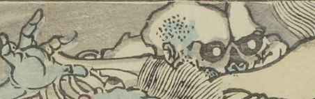

← 图鉴索引

白い瞳のある骸骨。
出典：親書誌：U426_nichibunken_0093：暁斎百鬼画談；ギョウサイヒャッキガダン／日付：2006／資源識別子：U426_nichibunken_0093_0040_0007
Copyright (c)2010- International Research Center for Japanese Studies, Kyoto, Japan. All rights reserved.